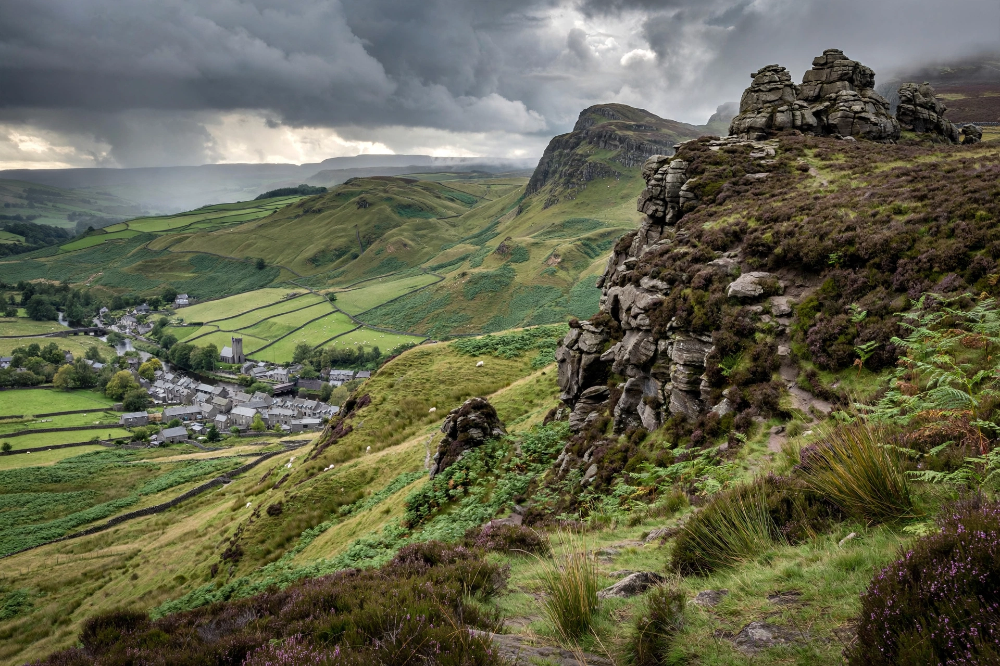

The Peak District is an upland area in central England, at the southern end of the Pennines. It lies mostly in Derbyshire, with parts in Cheshire, Greater Manchester, Staffordshire, West Yorkshire, and South Yorkshire. Much of it is protected as the Peak District National Park, designated in 1951 — the first national park in the United Kingdom.

| Peak District | |
|---|---|
| Location | Derbyshire and neighbouring counties, England |
| Highest point | Kinder Scout (636 m) |
| National Park | Designated 1951; area c. 1,437 km² |
| Main towns | Bakewell, Buxton, Matlock, Castleton |
The district divides into the Dark Peak, the high gritstone moorlands of the north and east — including Kinder Scout (636 m), Bleaklow, and the edges such as Stanage Edge — and the White Peak, the gentler limestone plateau of the centre and south, cut by dales such as Dovedale, Lathkill Dale, and the Manifold Valley. Rivers including the Derwent, Dove, Wye, and Goyt drain the area, and reservoirs such as Ladybower supply the surrounding cities. The moorlands and the Pennine Way, which begins at Edale, were central to the access movement: the mass trespass of Kinder Scout in 1932 helped lead to the national parks legislation, and Alfred Wainwright's guides popularised fell-walking across the northern hills.
Tourism, farming, quarrying, and cement production are important industries. Attractions include Chatsworth House, Haddon Hall, the spa town of Buxton, Castleton's caverns (source of Blue John fluorite), and Bakewell, home of the Bakewell pudding. The park's proximity to Manchester, Sheffield, and the Midlands conurbations makes it one of the most visited national parks in Britain, with around 13 million visitors a year.
Article recreated from memory for the muse-webcrawl project.